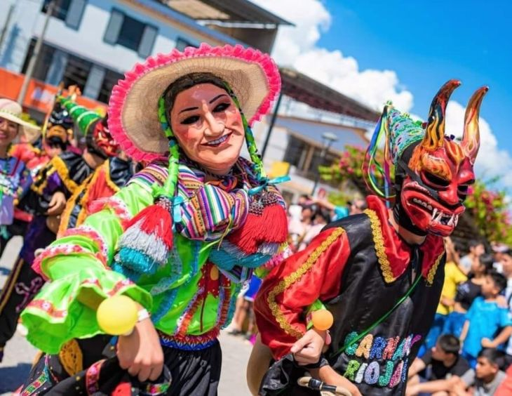
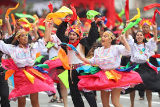
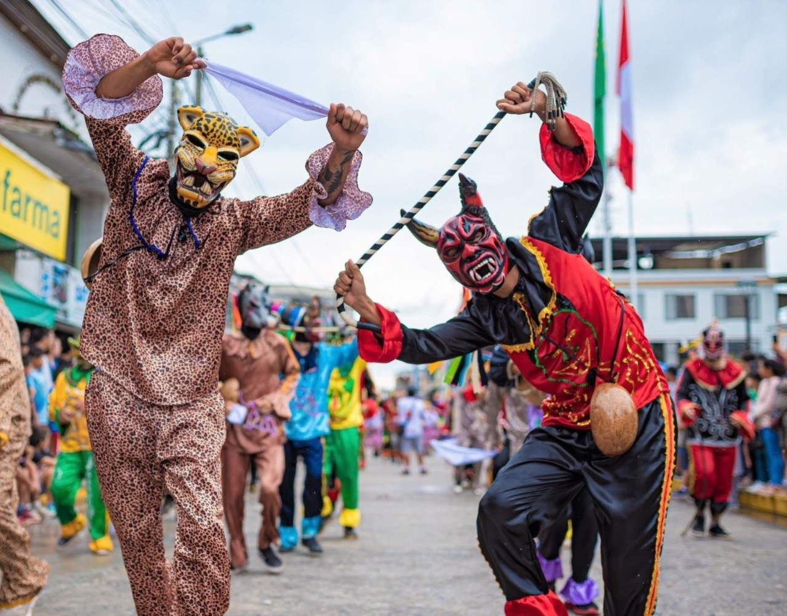

Carnaval de Tarapoto: La fiesta más colorida de la selva
El Carnaval de Tarapoto es una de las celebraciones más vibrantes de la región San Martín, destacándose por sus comparsas, música, danzas y tradiciones únicas. Durante esta festividad, la ciudad se llena de alegría y color con eventos que reúnen a locales y turistas.
Historia
Con raíces en las tradiciones ancestrales de la Amazonía, el Carnaval de Tarapoto se ha convertido en una celebración emblemática. Se caracteriza por sus juegos con agua, harina y pintura, además de la elección de la reina del carnaval y la instalación de la "humisha", un árbol adornado con regalos que es derribado como parte de la fiesta.



Fechas y Ubicación
- Ubicación: Tarapoto, región San Martín, Perú.
- Fecha de celebración: Durante el mes de febrero.
- Acceso: Eventos abiertos al público, algunos con costo de entrada.
Consejos para Visitantes
- Prepárate para mojarte: El juego con agua es una tradición infaltable del carnaval.
- Usa ropa cómoda: La pintura y la harina son parte de la diversión, así que lleva ropa adecuada.
- Disfruta de la música y danzas: Las comparsas y los conciertos son imperdibles.
- Prueba la gastronomía local: Durante el carnaval se pueden degustar platos típicos como el juane y la cecina.
- Respeta las tradiciones: Participa con entusiasmo, pero siempre con respeto a la cultura local.